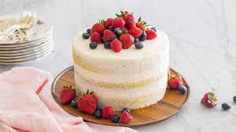

Cake Babes

Cake is a sweet baked dessert that is typically enjoyed for special occasions or as a treat. It is made from a
combination of ingredients such as flour, sugar, eggs, butter or oil, and flavorings, which are mixed together
to create a batter. The batter is then baked in an oven until it rises and forms a soft, spongy texture.
Cakes come in a variety of flavors and types, ranging from simple vanilla or chocolate cakes to more elaborate
creations with different layers, fillings, and frostings. Some popular cake flavors include carrot, red velvet,
lemon, coconut, and marble. The choice of flavor often depends on personal preference or the occasion for which
the cake is being made.
Cakes are often served as a centerpiece at celebrations like birthdays, weddings, anniversaries, and holidays.
They are enjoyed by people of all ages and are often accompanied by candles, singing, and the joyous act of
blowing out the candles.
In addition to traditional round or rectangular cakes, there are also other variations such as cupcakes
(individual-sized cakes), bundt cakes (ring-shaped cakes), and layered cakes with multiple tiers.
Overall, cake is a delightful and indulgent dessert that brings people together to celebrate special moments and
enjoy a sweet treat.
Recipe
- 2 ½ cups (300g) all-purpose flour
- 2 ½ teaspoons baking powder
- ½ teaspoon salt
- 1 cup (226g) unsalted butter, softened
- 2 cups (400g) granulated sugar
- 4 large eggs
- 2 teaspoons vanilla extract
- 1 cup (240ml) milk
Instructions
- Preheat your oven to 350°F (175°C). Grease and flour two 9-inch (23cm) round cake pans or line them with parchment paper.
- In a medium bowl, whisk together the flour, baking powder, and salt. Set aside.
- In a large bowl, cream together the softened butter and granulated sugar using an electric mixer until light and fluffy.
- Add the eggs one at a time, beating well after each addition. Stir in the vanilla extract.
- Gradually add the flour mixture to the butter mixture, alternating with the milk. Begin and end with the flour mixture, mixing just until combined after each addition. Be careful not to overmix.
- Divide the batter evenly between the prepared cake pans, smoothing the tops with a spatula.
- Bake in the preheated oven for about 25-30 minutes, or until a toothpick inserted into the center of the cakes comes out clean.
- Remove the cakes from the oven and let them cool in the pans for about 10 minutes. Then, transfer them to a wire rack to cool completely.
- Once the cakes are completely cooled, you can frost and decorate them as desired. Popular options include buttercream frosting, cream cheese frosting, or ganache.
- Slice and serve the cake, and enjoy!